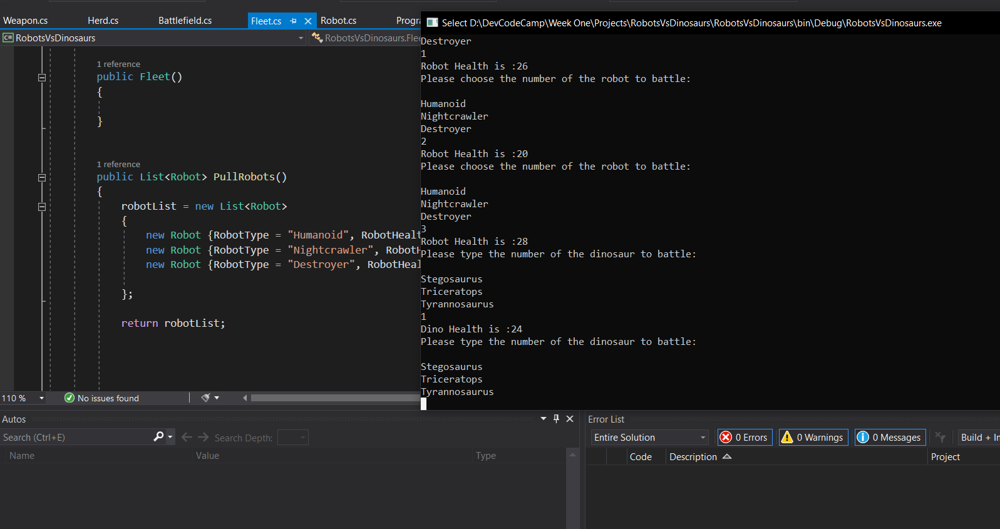
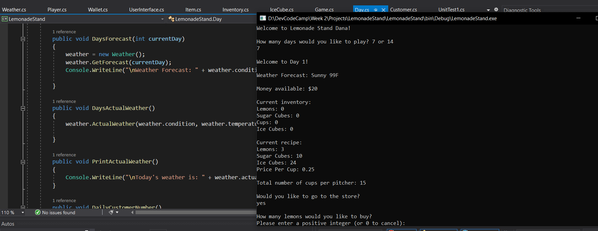
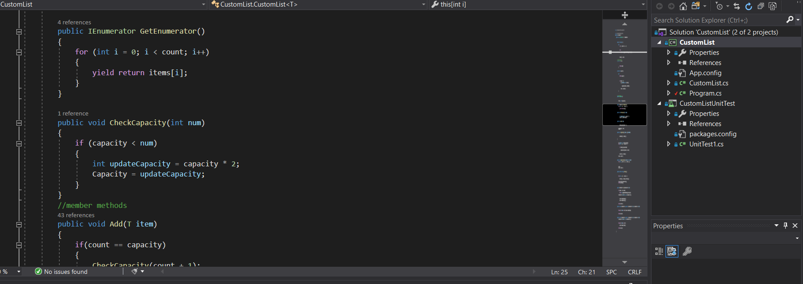
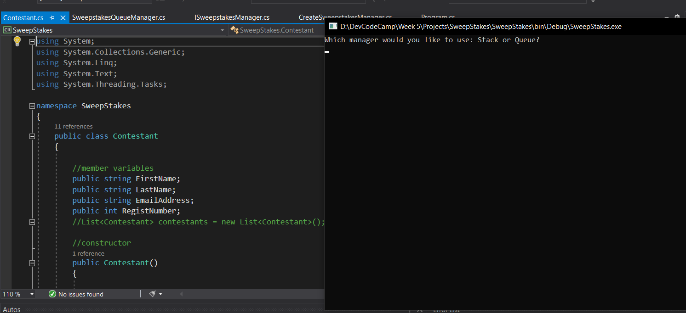
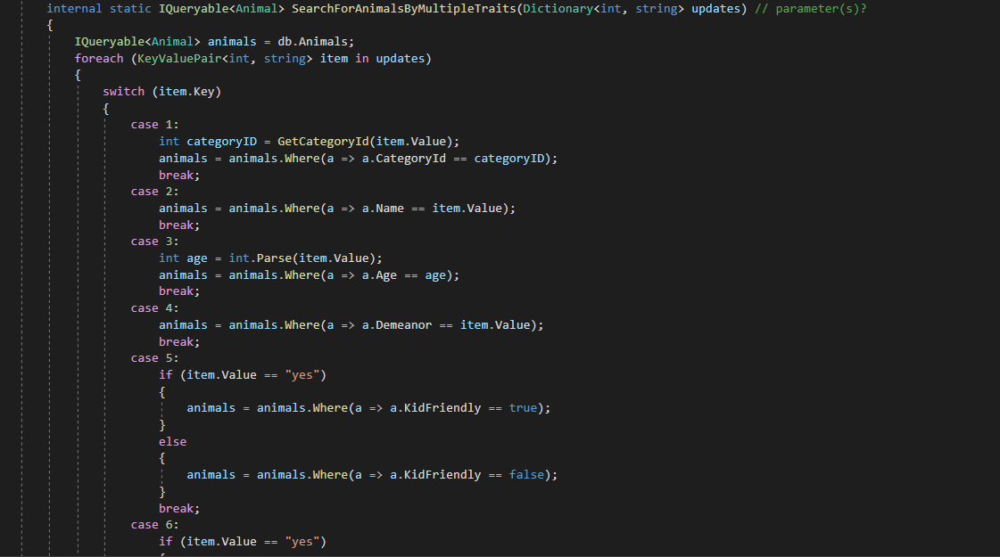

Project Portfolio
All work shown below was done while a student at DevCodeCamp.
Robots vs. Dinosaurs

Used the concepts of OOP to create classes and objects to interact with each other, I created a console application that has robots and dinosaurs fight in a battle.
While completing this project, I gained experience with classes, objects, and lists.
Technologies used: C#
Tools used: Visual Studio, GitHub
See More
Lemonade Stand

In this project, I created a basic Lemonade Stand game. Throughout the project, I gained experience with
generating random numbers, understanding interfaces, SOLID principles, inheritance, and a deeper understanding of how objects and classes interact.
Technologies used: C#
Tools used: Visual Studio, GitHub
See More
*Disclaimer: We were provided with some starter code for this project.
Custom List

For this projet, I created a custom list class, modeled after the built in list class in C# without using any of the built-in List or Array methods. While developing this project, I gained experience in Test Driven Development
including creating unit test methods, deepened my knowledge of properties, Arrays, operator overloads, and how the generic List method in C# works.
Methods include Adding and removing items from a list, converting the contents of a list to a string, overloading the + and - operator and zipping two lists.
Technologies used: C#
Tools used: Visual Studio, GitHub
See More
Sweepstakes

I created an application that provides the functionality to manage multiple sweepstakes. I implemented the logic for the functions and pieces of functionality that were requested
with the ability for the users to choose how they would like. I utilized the Dictionary, Queue, and Stack data structure as well created an interface (ISweepstakesManager) that had two classes inherit and implement its methods.
I gained experience using the dependency injection as well as the factory design pattern.
Technologies used: C#
Tools used: Visual Studio, GitHub
See More
Humane Society

On a team of two, I contributed to the backend of an application for a humane society that stores and displays data about animals in a database. We were provided with started queries to set of the tables of the databse
and much of the code for the project. We were responsible for creating queries to add data to the database. For the program, we were responsible for creating functionality for a list of methods in the Query class that performed
the CRUD operations that connect the database to the program. Coming into the project with much of the code provided created a unique learning experience that required us to step through the prorgram to determine its functionality and detemine how the
methods we were going to be writing were being used. Throughout the project, I gained experience using Lambda expressions, LINQ query operators, SQL queries, and working on a team to meet one goal.
Technologies used: C#, SQL
Tools used: Visual Studio, GitHub, Microsoft SQL Server Management Studio
See More
*Disclaimer: I was provided with the some queries to create the tables in the database, as well as much of the code in the project.
Portfolio Website
I created this website you are looking at to highlight my portfolio! I utilized HTML5, CSS and Bootstrap 4 to create this website.
Technologies used: HTML, CSS
Tools used: Visual Studio Code
Group Capstone
Reserved for group capstone that will be completed by July.
Technologies used:
Tools used:
Individual Capstone
Reserved for individual capstone that will be completed by July.
Technologies used:
Tools used: